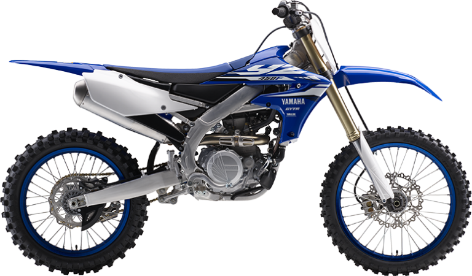
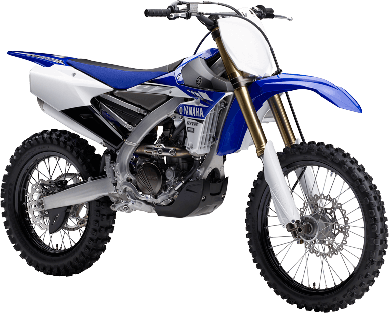

Yamaha YZ450F
- Kategorija: Motocross
- Brend: Yamaha
- Kvačilo: Wet, Multiple Disc
- Menjač: 5-stepeni
- Težina: 110 kg
- Visina od tla: 345 mm
- Visina sedišta: 965 mm
- Zadnji disk: 240 mm
- Rezervoar: 6,2 l
O modelu: Yamaha YZ450F
Yamaha YZ450F je sinonim za dominaciju na stazi. Razvijena sa fokusom na savršenu ergonomiju i maksimalnu iskoristivost snage, ova mašina nudi najnaprednije performanse u klasi. Njen agregat sa obrnutom glavom cilindra obezbeđuje centralizovanu masu, što čini motocikl neverovatno laganim za upravljanje u vazduhu i kroz najteže zavoje.
Uz Yamaha Power Tuner aplikaciju, vozač ima potpunu kontrolu nad mapiranjem motora direktno sa svog pametnog telefona, prilagođavajući snagu uslovima staze u realnom vremenu. YZ450F nije samo motocikl, to je tehnološko remek-delo spremno za pobedu.